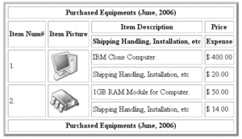
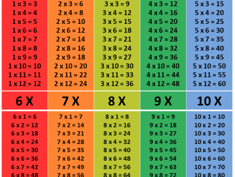
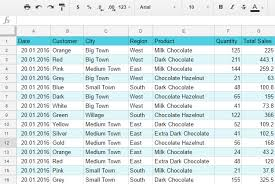
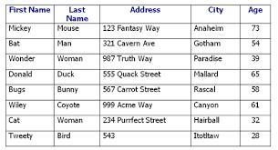
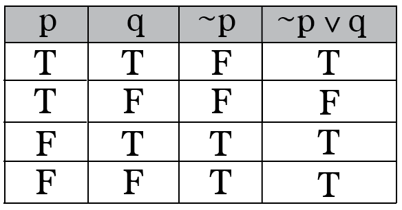

| Name | Surname | Favourite Sauce | Home Town |
|---|---|---|---|
| Ismet | Samsodien | Mustard | Ruyterwacht |
| Naaisk | Kamish | Tomato | Hanover Park |
| Fatima | Hendricks | Sweet Chili | Valhalla |
| Liam | Hendricks | Chilli & Danya | Grassy Park |
| Rasool | Booley | Hot | Cape Town |
| Taylor | Davids | Mayo | Bridgetown |
| Raaiskh | Booley | Tomato | Athlone |
| Khanyiso | Haman | BBQ | Delft |
| Naither | Manuel | Tomato | Lost City |
| Justin | Creighton | Chilli | Cape Town |
| Keanan | Erasmus | Seafood | Cape Town |
| Tabile | Khume | BBQ | Khayelistha |
| Ebraheem | Seale | Mustard | Bonteheuwel |
| Marlon | Ford | Sweet Chilli | Grassy Park |
| Eliziabeth | Pollard | Moya | Claremont |
| Imraan | Meyer | Mustard | Grassy Park |
| Nur | Brook | Chilli | Kensington |
| Marco | Paulse | Mushroom | Chery |
| Michelle | Fortuin | Sriracha | Brakenfell |
| Justice | Ganiza | Thousand Island | Brooklyn |
| Toyer | Dreyer | Sea Food | Chery |
A table of contents usually includes the titles or descriptions of first-level headings (chapters in longer works), and often includes second-level headings (sections or A-heads) within the chapters as well, and occasionally even includes third-level headings (subsections or B-heads) within the sections as well. The depth of detail in tables of contents depends on the length of the work, with longer works having less. Formal reports (ten or more pages and being too long to put into a memo or letter) also have a table of contents. Within an English-language book, the table of contents usually appears after the title page, copyright notices, and, in technical journals, the abstract; and before any lists of tables or figures, the foreword, and the preface.
Mathematical tables are lists of numbers showing the results of calculation with varying arguments. Before calculators were cheap and plentiful, people would use such tables to simplify and drastically speed up computation. Tables of logarithms and trigonometric functions were common in math and science textbooks. Specialized tables were published for applications such as astronomy, celestial navigation and statistics.
The periodic table, or periodic table of elements, is a tabular arrangement of the chemical elements, ordered by their atomic number, electron configuration, and recurring chemical properties, whose structure shows periodic trends.

In relational databases, and flat file databases, a table is a set of data elements (values) using a model of vertical columns (identifiable by name) and horizontal rows, the cell being the unit where a row and column intersect. A table has a specified number of columns, but can have any number of rows.
 Application developers create tables and their associated lists and forms for users to add and update records.
